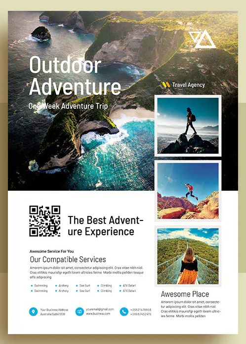
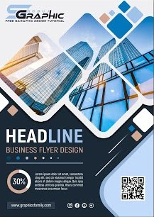
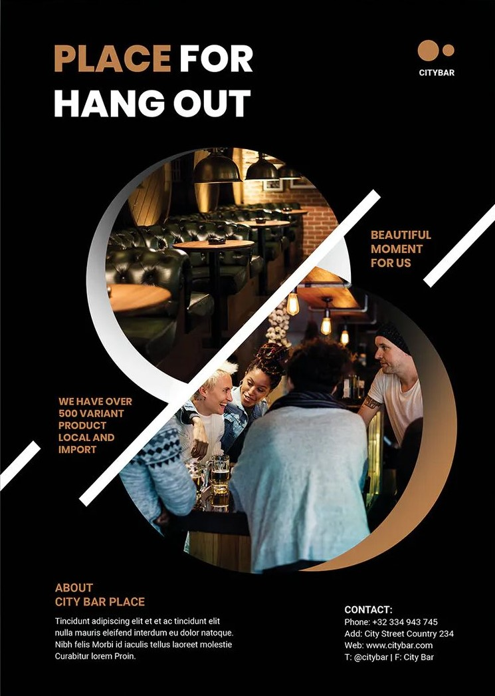
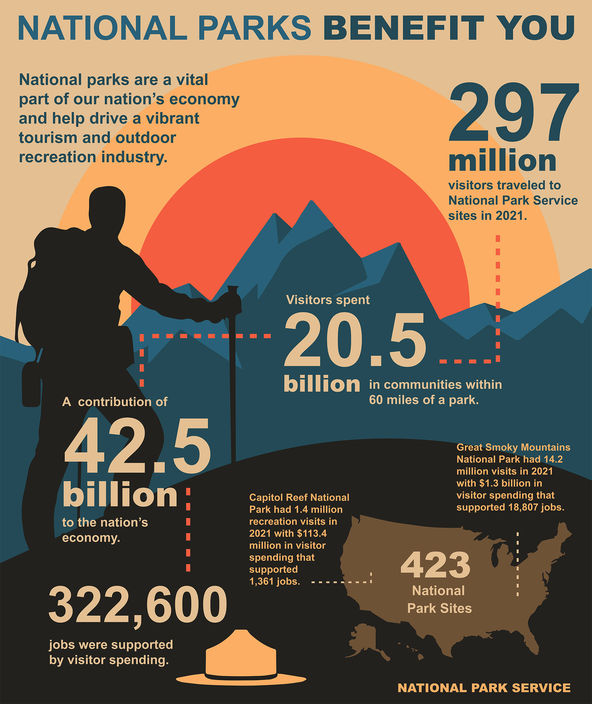
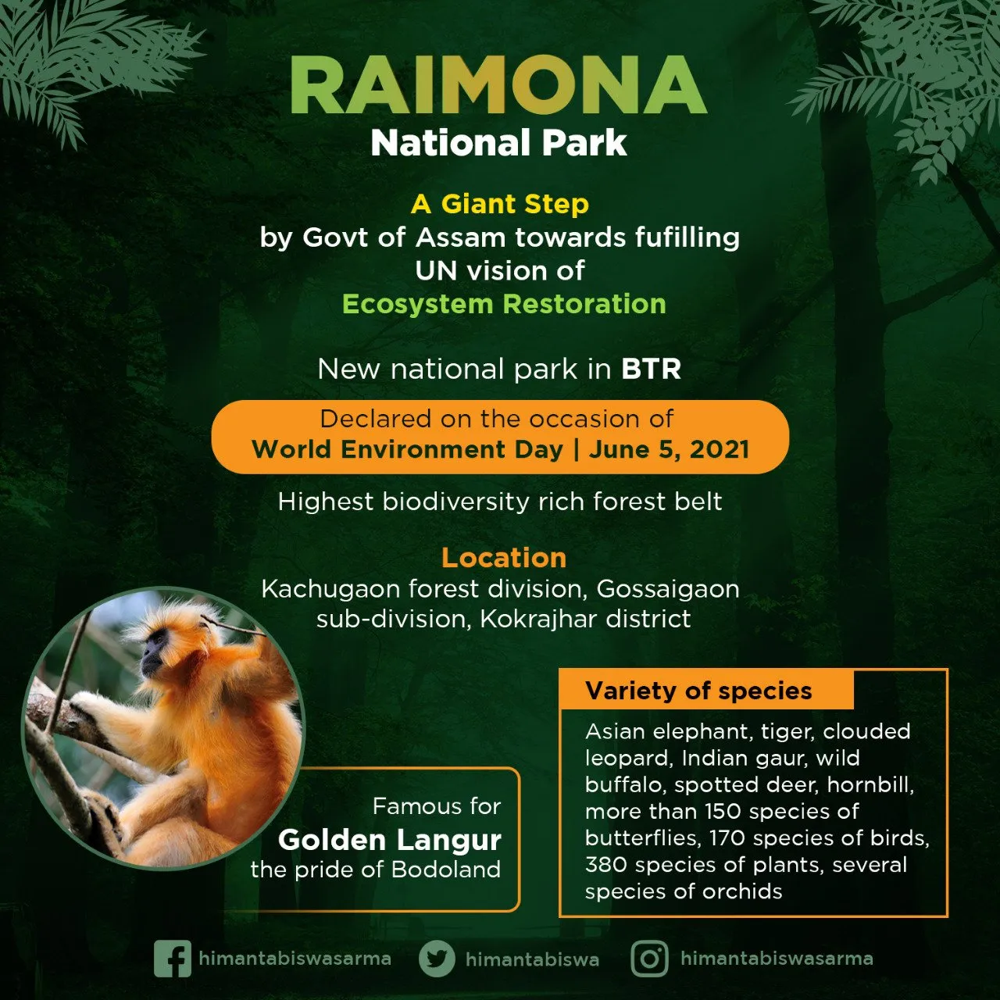
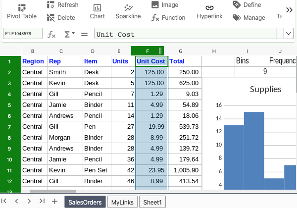
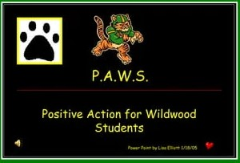

☩ General-purpose Applications
General-purpose applications include word processors, spreadsheets, presentation graphics, and database management systems.
📚 Word Processors
Word processors create text-based documents and are one of the most flexible and widely used software tools. All types of people and organisations use word processors
to create memos, letters, reports and faxes. Organisations create newsletters, manuals, and brochures to provide information to thier customers. Students and reserachers use word
processors to create reports, documents, guidelines, etc.
Microsoft Word is the most widely used word processor. Other popular word processors include Google Docs, Corel WordPerfect, OpenOffice Writer
and Apple Pages.
Assume that you accepted a job as an advertising coordinator for Adventure Travel Tours, a travel agency specialising in active adventure
vacations. Your primary responsibilities are to create and coordinate the company's promotional materials, including flyers and travel reports. To see how you could use Microsoft
Word as the advertising coordinator for Adventure Travel Tours, see Figure 3-3 and 3-4.
📄 Creating a Flyer
You have been asked to create a promotional advertising flyer. After discussing the flyer's content and basic structure with your supervisor, you start to enter the flyer's text in
the Microsoft Word Document. As you enter the text, the spell checker identifies some spelling and grammetical errors. Once the text has been entered, you proofread the text and then
focus on your attention on enhancing the visual aspects of the flyer. You add a photograph and epxeriment with different character and paragraph formats, including font types, font
sizes, colours, and alignments.



Figure 3-3 Flyer
📄 Creating a Report
Your next assignment is to create a report on Navegon National Park. After conducting your research, you start writing your paper. As you enter the text for the report, you notice that
the AutoCorrect feature automatically corrects some grammer and punctuation errors. Your reports includes several figures and tables. You use the captions feature to keep track of figure
and table numbers, to enter the caption text, and to position the captions. You use the footnote feature to assist in adding notes to further expalin or comment on information in the report.
Finally, you prepare the report for printing by adding header and footer information.



Figure 3-4 Report
📑 Spreadsheets
Spreadsheets organise, analyse, and graph numeric data such as budgets and financial reports. Once used exclusively by accountants, spreadsheets are now widely used in
nearly all professions. Marketing professionals analyse sales trend. Financial analysts evaluate and graph stock market trends. Students and teachers record grades and calculate
grade point averages.
The most widely used spreadsheet program is Microsoft Excel. Other spreadsheet applications include Corel Quattro Pro, Google Sheets, and
OpenOffice Calc.
Assume that you have just accepted a job as manager of the Prajakta Internet Cafe. This is a unique cafe that offers a variety of coffee and
snacks, and also free Internet access. As a manager, one of you responsibilities is to create a financial plan for the next year. To see how you could use Microsoft Excel as the
manager for the Prajakta Internet Cafe, see Figure 3-5 and 3-6.
📄 Creating a Sales Forecast
You have to develop first-quarter sales forecast for the Prajakta Internet cafe. You begin by studying sales at the Prajakta Internet Cafe and talking to several managers. After
obtaining sales and expense estimates, you are ready to create the first-quarter forecast. You start structuring the worksheet by inserting descriptive text entries for
the row and column heading. Next, you insert numeric entries, including formulas and functions to perform calculations. To test the accuracy of the worksheet, you
change the values in some cells and verify.

Figure 3-5 Worksheet
📄 Analysing Your Data
After presenting the first-quarter forecast to the owner, you revise the format and expand the workbook to include worksheets for each quarter and an annual forecast summary. You
give each worksheet a descriptive sheet name. At the request of the owner, you perform a what-if analysis to test the effect of different estimates for payroll, and you use a chart
to visualise the effect.

Figure 3-6 Annual forecast and analyse
📺 Presentation Graphics
Research shows that people learn better when information is presented visually, Presentation graphics are programs that combine a variety of visual objects to create attractive,
visually interesting presentations. They are an excellent tools to communicate a message and to persuade people.
People in a variety of settings and situations use presentation graphics programs to make that presentations. For example, marketing strategies to
thier superiors. Salespeople use these programs to demonstrate products and encourage customers to make purchases. Students use presentation graphics program to create high-quality
presentations.
Some of widely used presentation graphics programs are Microsoft PowerPoint, Google Slides, Corel Presentaions, OpenOffice Impress, Adobe Acrobat, Apple
Keynote, IBM Lotus Freelance Graphic, SoftMaker Presentaions, and Prezi.
Assume that you have volunteered for PAWS, a local animal rescue agency. You have been asked to create a powerful and persuasive presentation
to encourage other members from your community to volunteer. To understand the uses of Microsoft PowerPoint, see Figure 3-7.

Figure 3-7 Presentation
Tips
When you share a presentation convert it into PDF format and share it. This will help you to reach a broader audience as everybody may not have office suite which you use to create this
presentation.
Box 3-1
🟦 Database Management Systems
A database is a collection of related data. It is the electronic equivalent of a file cabinet. A Database Management Systems (DBMS) or database manager is a
program that set up, or structures, a database. It also provides tools to enter, edit, and retrieve data from the database. All kinds of individuals use database, from hospital administrators
recording patient information to police officers checking history of criminals. Colleges and universities use database to keep records of thier students, instructors, and courses. Organisations
of all types maintain employee databases.
Some widely used database management systems designed for personal computers are Microsoft Access, Google Obvibase, IBM DB2, MYSQL, Orcale Database,
and OpenOffice Base.
🧠 CONCEPT
---- CHECK
1. What are word processors? What are they used for?
2. What are spreadsheets? What are they used for?
3. What are presentation software programs? What are they used for?
4. What are database management systems? What are they used for?
Contact us
E-mail :- example.@gmail.com
⇦ PREV
NEXT ⇨